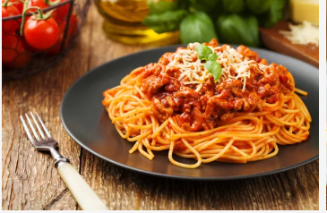

Spaghetti Recipe

Spaghetti is prepared by boiling pasta in salted water until soft, then draining it. A sauce
is made by frying onions and garlic in oil, adding tomatoes and spices, and cooking until
thick and flavorful. The cooked spaghetti is mixed with the sauce and served hot, with meat
or vegetables added if desired.
Ingredients
- Spaghetti
- Cooking oil
- Onions
- Garlic
- Tomatoes
- Salt
- Spices
- Meat
Steps
- Boil water in a pot, add salt, and cook the spaghetti until soft. Drain and set aside.
- Heat oil in another pot and fry the onions until soft.
- Add garlic and cook briefly.
- Add tomatoes or tomato sauce and cook until thick.
- Add salt, spices, and meat or vegetables if using. Cook well.
- Add the cooked spaghetti and mix until well combined.
- Serve hot.
Home